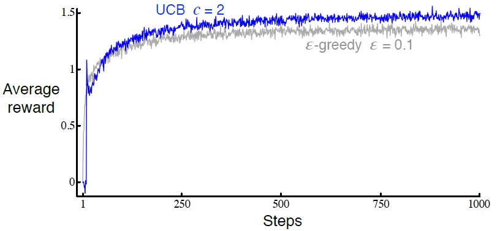

2.7 上置信界动作选择
因为对动作值估计的准确度的不确定性存在, 所以需要进行探索. 贪心动作是当前看上去最好的动作, 但其他动作中的一些事实上可能更好. -贪心动作选择强制使得非贪婪动作被选择, 但这一过程对各个动作是不加区分的, 即使是接近贪心或特别不确定的动作也不被偏好. 对非贪心动作来说, 将其估计值离成为最大值的距离与估计值中的不确定性考虑在内, 由此判断各个贪心动作成为最优动作的潜力, 然后根据这个潜力进行动作动作选择显然是更好的. 一种能做到这一点的、高效的方式就是由下式进行动作选择 其中表示的自然对数(的该数次幂等于), 表示在时间之前动作被选择的次数((2.1)中的分母), 以及常数控制了探索的程度. 如果, 那么被认为是最优动作.
如上所述的上置信界<upper confidence bound, UCB>动作选择的观念为: 式中的根号项是对的估计值的不确定度或方差. 欲寻求最大值的项1, 是动作可能的真实值的上界的一种, 其中由决定置信水平. 每当被选择时, 不确定性可以被认定是减少了: 增加, 因为其出现在分母中, 所以不确定性项减小了. 在另一方面, 每当除之外的动作被选择, 增加而保持不变; 因为出现在分子中, 所以对不确定性的估计增加了. 自然对数的使用意味着增长的速率逐渐变慢, 但其值依然会趋近于无穷大; 所有的动作都会被选择, 但有较低的估计值或已经被频繁选择过的动作, 将会随时间推移减少被选择的频率. 在10-摇臂测试工具上使用UCB的结果如图2.4所示. 如图中所示, UCB常常表现得很好, 但相比于-贪心而言, 其更难从赌博机问题拓展到书中余下部分中的、更为一般的强化学习情形. 其中的一个困难之处就是对非固定性问题的处理; 需要比第2.5节中所呈现的更为复杂的方法来进行处理. 另一个困难之处在于对巨大状态空间的处理, 特别是当使用了如本书第2部分所述的函数近似方法时. 在这些更为复杂的情形下, UCB动作选择通常是不理想的.

图2.4: UCB动作选择在10-摇臂测试工具中的平均表现. 如图所示, 除了UCB从尚未尝试过的动作中随机进行选择的起始步外, UCB通常表现得比-贪心动作选择好.
练习 2.8: UCB尖峰 在图2.4中UCB算法的表现在第11步时有一个明显的尖峰. 为什么会这样? 请注意, 为了使答案完全令人满意, 其需要从"为什么奖赏在第11步增加了", 以及"为什么奖赏又在后续的几步中减小了"这两个方面进行解释. 提示: 如果, 那么尖峰将更矮.
1: 即右侧的量, 译者注